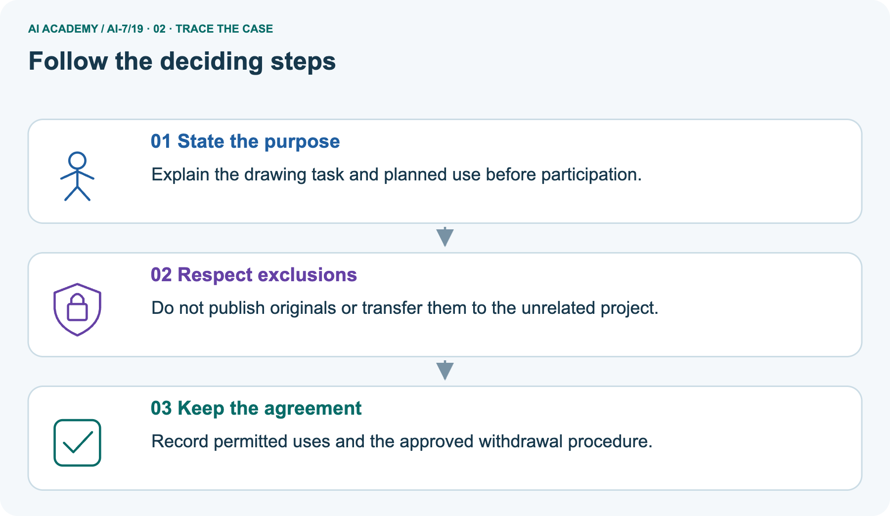
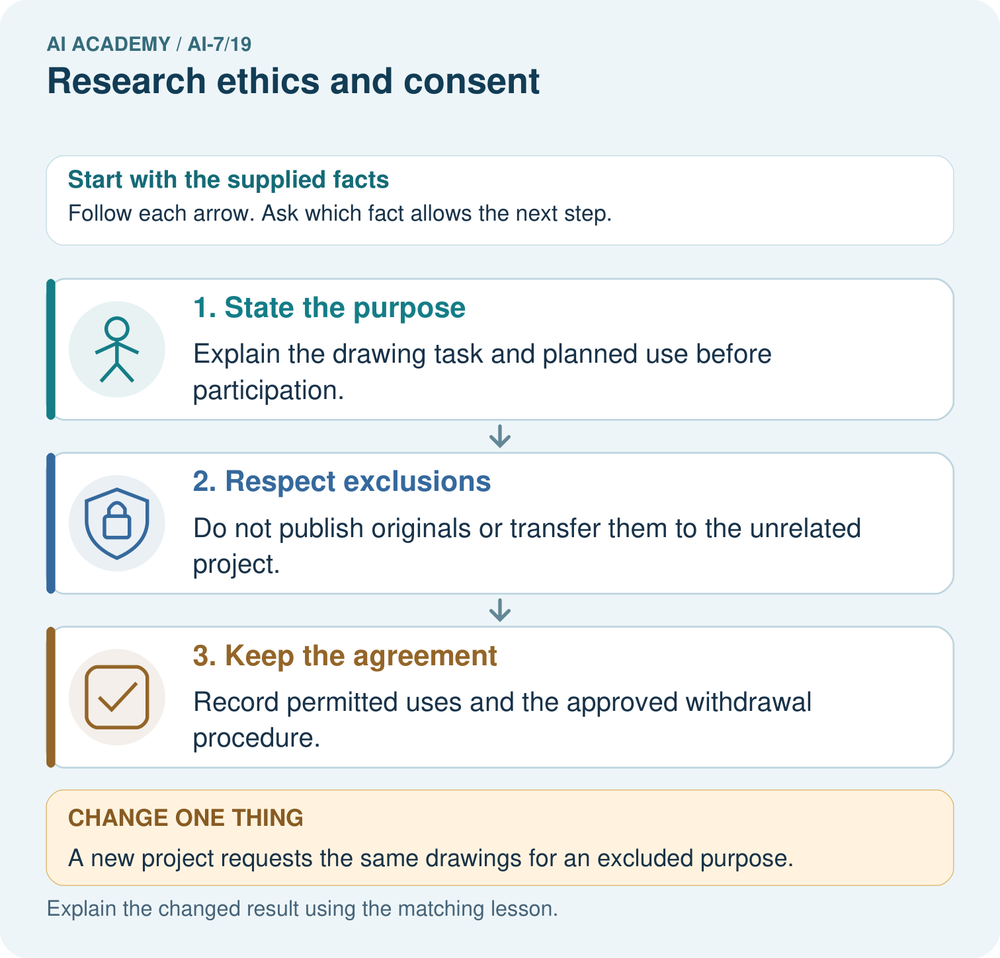
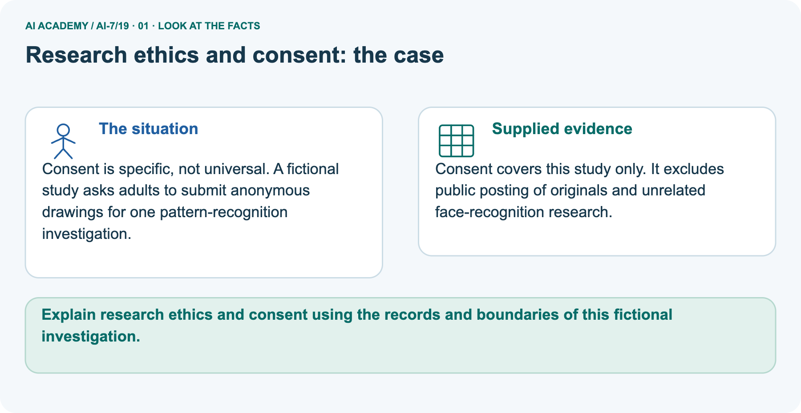
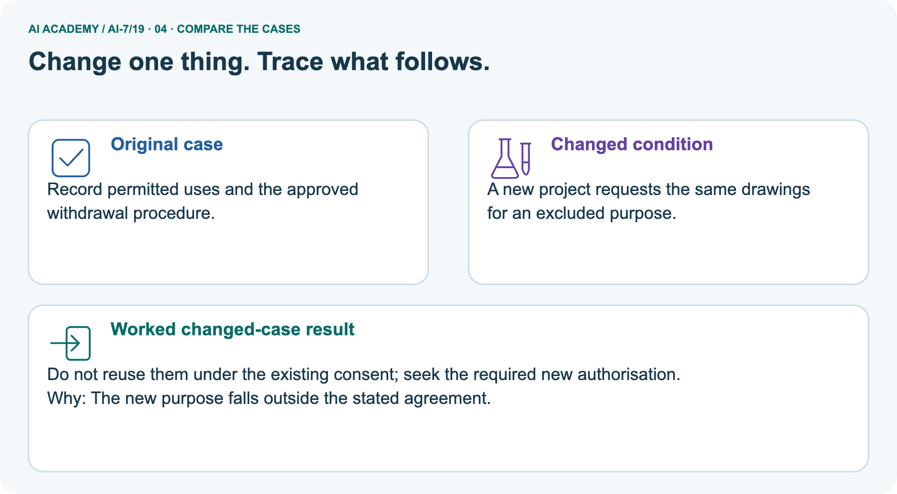
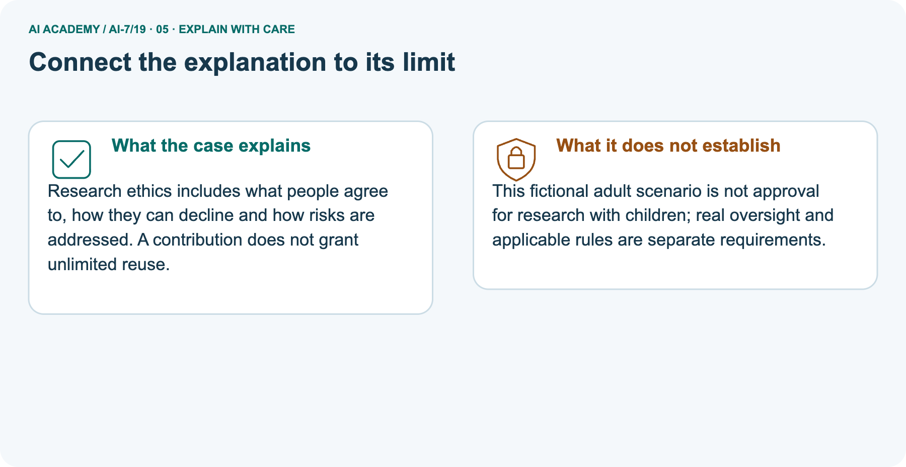
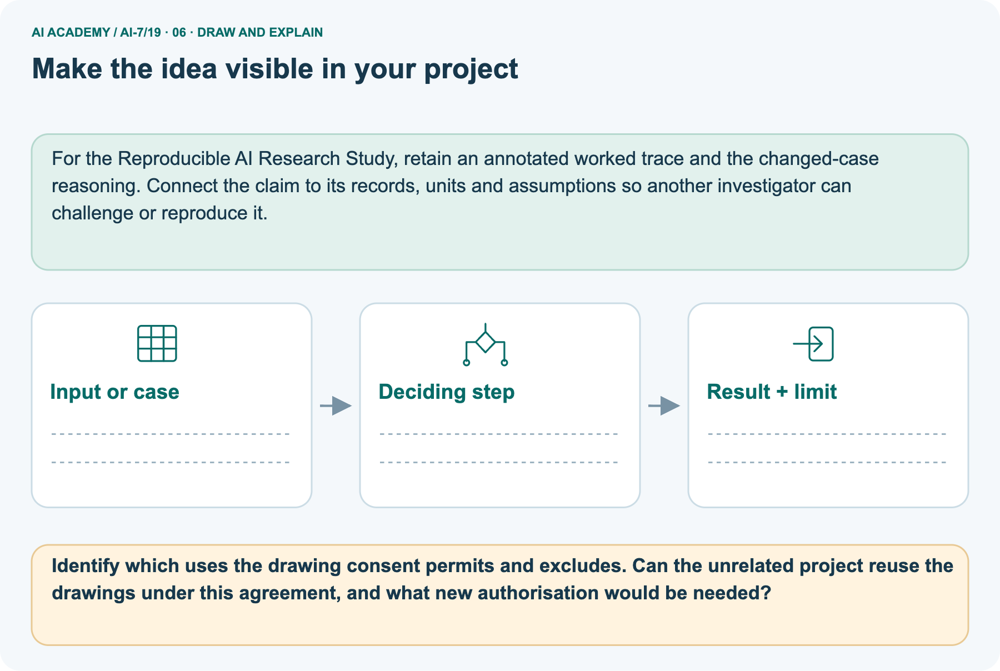

AI Academy · Level 7 · Grade 12 · Week 19 · Teacher guide
Research ethics and consent
Learn to understand, design, build, test and explain AI systems responsibly.
Project: Reproducible AI Research Study
THE CONNECTED WEEK
Ask what permission is evidenced and what remains only proposed.
Teach purpose-specific authorization, voluntary choice and honest handling limits.
Keep one habit: Model grading-purpose boundary → inspect drawing exclusions → discuss anonymous withdrawal limits → assess opt-in scenario → retain fictional-policy scope.
Main lesson · Section 1
Prepare the connected research investigation
Keep modelling, shared practice and independent evidence distinct.
Target and main teaching plan
Primary target: Explain the mechanism and terminology of research ethics and consent
| Session | Sequence and minutes | Resources |
|---|---|---|
| Session 1 · Understand · 45 min | 0–7: recall and prerequisite; 7–15: inspect the concrete case and predict; 15–30: teacher models the worked trace; 30–40: learners explain a step using the text and visual; 40–45: check the core idea. | Use Your mission, Notice the evidence, See how it works, Words that unlock the idea and Follow a worked example; record the brief recall in the workbook. |
| Session 2 · Practise · 45 min | 0–5: retrieve the procedure; 5–15: W2 completion practice; 15–23: explain and check with a partner; 23–30: each learner answers the misconception check; 30–40: targeted reteaching or a harder variation; 40–45: prepare the investigation. | Use Find and repair a mistake, Practise together and Run the investigation, with workbook W2 and Individual reasoning check. |
| Session 3 · Investigate and transfer · 45 min | 0–5: retrieve the decision rule; 5–20: investigate or trace; 20–30: start the independent case; 30–38: connect the project; 38–43: act on feedback; 43–45: plan the return check. | Use Run the investigation, Build your understanding, Connect your project and Show what you know. Reserve further time for the full task set. Use a code example only where one is actually supplied. |
This is a starting allocation of 135 minutes, not a validated duration. Preserve all named topics. Schedule extra time for connected examples, the full investigation, independent cases and project building.
Repeated copies of a case share one recorded attempt; they are not new evidence.
Preparation and prerequisite
Lesson and workbook; paper and pencil
Calculator and optional local Python 3 for arithmetic; no live API or private data
Prepare the fresh retry separately and withhold its solution until after collection
A result depends on the inputs, procedure and conditions that produced it. Preserve data roles and distinguish observed outcomes from predictions or unmeasured conditions.
If the prior concept cannot be explained, use a short retrieval activity before this chapter.
Opening retrieval
Without opening the old lesson, explain one key idea from Dataset and benchmark limitations. Give an example and a mistake that the idea helps you avoid.
Look for: Explain the mechanism and terminology of dataset and benchmark limitations
Reference example, not the only acceptable wording: Teacher explanation: A benchmark measures performance on its particular data and labels. Duplicates, obsolete cases or poor coverage can weaken claims.
Inspect eligibility, source dates, related units and label definitions before scoring. Deduplicate by declared unit identity, not merely file name; report excluded and unassessed cases.
Without opening the old lesson, explain one key idea from Ablation studies. Give an example and a mistake that the idea helps you avoid.
Look for: Explain the mechanism and terminology of ablation studies
Reference example, not the only acceptable wording: Teacher explanation: Ablation removes a component to investigate its contribution under a controlled comparison.
Interactions can make contributions depend on other components. Compare full system, without retrieval and without validation on identical cases and scoring.
Hold other settings fixed; record changed failure categories, not just totals.
Without opening the old lesson, explain one key idea from Effect size and practical importance. Give an example and a mistake that the idea helps you avoid.
Look for: Explain the mechanism and terminology of effect size and practical importance
Reference example, not the only acceptable wording: Teacher explanation: Effect size describes magnitude on a stated scale. Practical importance depends on task requirements, not merely a nonzero difference.
For paired response durations compute baseline minus candidate per case and average the differences. Positive means faster candidate. Compare with a prespecified minimum useful gain.
Pictured end goal
Explain research ethics and consent using the records and boundaries of this fictional investigation.
Earlier wording, alternatives and picture transcripts
Teach the learning cycle
Retrieval answer guidance
Dataset and benchmark limitations
Ablation studies
Effect size and practical importance
Compact alternative: two 45-minute sessions for the core explanation and W1–W5 only. The main plan uses three sessions; schedule further time for the complete investigation, project, visual journey and any code examples. Research ethics considers purpose, burden, voluntary participation and consequences. Approval to teach does not automatically authorise a research data collection.
Use the supplied constructed scenarios to make the mechanism inspectable. Collect W4 before sharing solutions.
Students should name intermediate evidence and limitations; classroom pacing and learning effectiveness remain unvalidated.
Outcomes
Explain the mechanism and terminology of research ethics and consent
Apply the stated procedure to a new case with a traceable result
Identify an assumption or limitation and design a revealing follow-up
Preparation
Prerequisite answer
End goal for the pictorial case
This added worked case illustrates the week’s main idea. Retain all original and connected topics; schedule its practice within the teaching cycle.
Main lesson · Section 2
Teach ethics through explicit fictional policy and evidence of permission
Assess the first unsupported inference rather than rewarding a polished form.
Definitions and complete policy
Research ethics considers purpose, burden, voluntary participation and consequences. Approval to teach does not automatically authorise a research data collection.
Use fictional records for this course. For the supplied classroom policy, a real study needs responsible review, plain-language purpose, opt-in consent and withdrawal handling before collection.
Do not implement real recruitment in this exercise.
| Supplied classroom-policy item | What the paper audit requires |
|---|---|
| Activity materials | Fictional records only; no actual recruitment or collection |
| Real collection proposed under this policy | Responsible review before collection; no claim it has occurred |
| Purpose | Plain-language explanation of the named investigation and intended uses |
| Participation | Affirmative opt-in and ability to decline without penalty |
| Withdrawal | Explain the declared procedure and its limits before participation |
| Existing grading submission | Does not establish permission for research reuse |
| New purpose | Outside existing permission requires its own required review and authorization |
| Scope of this lesson | Fictional-policy reasoning, not a determination of real institutional or legal requirements |
Main ledger and checked teacher reasoning
| Main proposal step | Evidence supplied | Audit result under this policy |
|---|---|---|
| Student submits essay | Submission is for grading | Supports the grading purpose only |
| Team proposes automatic study copy | No separate research opt-in or review supplied | Research permission is not established |
| Assume submission implies agreement | Purpose changes without its required process | Unsupported inference |
| Repair for this course | Use fictional essay substitutes | No real records need to be copied |
| Any actual future study | Required review and voluntary permission before collection | Not performed or approved by this exercise |
Main: grading submission does not supply research permission under the fictional policy. Use fictional substitutes; a future real proposal would require its stated review and voluntary permission before collection. Picture: the named drawing purpose is within scope, but originals cannot be publicly posted or reused for the excluded face project under this agreement. A request is not authorization.
Other handling conditions remain; do not invent traceable withdrawal for anonymous drawings. Independent case: silence is not affirmative opt-in, and grading research participation conflicts with penalty-free refusal. A repair removes grade consequences and uses the required process; it does not assert that review or consent has occurred. No real institutional/legal determination or human study is carried out.
Research ethics and consent — evidence trace
Guided: The grading purpose does not establish research permission under the policy. Redesign around fictional data or obtain required review and voluntary permission before collection.
Qualification: This classroom policy exercise does not determine real legal or institutional requirements.
Exit: accept a concrete variation with its predicted outcome and a stated condition that would challenge the mechanism; reject a claim resting on unmeasured evidence.
Proposal automatically copies student essays into a study because they were submitted for grading.
The grading purpose does not establish research permission under the policy. Redesign around fictional data or obtain required review and voluntary permission before collection.
Compare the intermediate evidence with the final statement. Explain why each number or decision follows from the stated inputs.
The conclusion belongs to this scenario and procedure; changing the inputs, evaluation population or authority can change what it establishes. Retain the raw record so a later revision can be compared honestly.
Purpose and voluntary-choice probes
| Ethics/policy probe | Checked interpretation |
|---|---|
| Teacher can access work for grading | Access does not establish study permission |
| No reply from a person | Not affirmative opt-in under the supplied policy |
| Participation affects grades | Conflicts with a voluntary, penalty-free choice |
| A new project has an interesting purpose | Interest does not override existing exclusions |
| A form has been drafted | Not evidence of consent obtained or review completed |
| Contributions described as anonymous | Do not assume a reversible identity link for later deletion |
| Purpose is within scope | Other review, burden and handling conditions still need checking |
| A classroom answer is correct | Does not approve an actual human study |
Separate drawing purpose map and limits
Consent is specific, not universal. A fictional study asks adults to submit anonymous drawings for one pattern-recognition investigation.
Consent covers this study only. It excludes public posting of originals and unrelated face-recognition research.
The separate picture concerns fictional adult contributors and one named drawing investigation. The stated agreement excludes public posting of originals and unrelated face-recognition research. Neither excluded use becomes permitted merely because someone asks for the drawings. Even the named use still depends on the other stated review and handling conditions.
The picture calls the drawings anonymous but supplies no identification or withdrawal mechanism. Do not promise that an already unlinked contribution can always be found and deleted; explain the actual declared withdrawal process and its limits. None of these adult-scenario facts authorizes research with children.

| Requested drawing use | Within this agreement? | Paper-audit action |
|---|---|---|
| Named pattern-recognition investigation | Within stated purpose | Check remaining review and handling conditions |
| Public posting of originals | Explicitly excluded | Do not post under this agreement |
| Unrelated face-recognition project | Explicitly excluded | Existing agreement does not authorize reuse |
| New project asks for originals | Request only; no new authorization supplied | Keep exclusion; identify required new process |
| Find an anonymous contribution for withdrawal | Mechanism not supplied | Do not invent traceability or unlimited deletion promises |
Picture trace and excluded-use explanation



Read the picture one step at a time
Research ethics includes what people agree to, how they can decline and how risks are addressed. A contribution does not grant unlimited reuse.
This fictional adult scenario is not approval for research with children; real oversight and applicable rules are separate requirements.
Change: A new project requests the same drawings for an excluded purpose.
Prediction: Do not reuse them under the existing consent; seek the required new authorisation.
Reason: The new purpose falls outside the stated agreement.
Earlier wording, alternatives and picture transcripts
Begin by writing the question the procedure is intended to answer. Identify the information already supplied, the information it will produce and the information still missing.
These are constructed classroom examples; they do not require live accounts, private records or an external service. Do not treat a plausible explanation as a measured outcome.
Before applying the procedure, write its units, denominator or decision boundary where relevant. A partner should be able to repeat each step using the same inputs.
If a required input is absent or violates the stated contract, record that condition explicitly instead of quietly replacing it with a convenient value.
| Term | Meaning |
|---|---|
| Consent | A declared voluntary permission process |
| Purpose limitation | Restricting use to the authorised purpose |
| Research burden | The cost or risk imposed on participants |
Model the reasoning aloud
Use the complete worked example below before asking learners to complete W2. Reveal a small part, invite a prediction, then explain the deciding step.
These teacher notes contain solutions; do not reveal the independent case answer during modelling.
| Thinking move | Teacher prompt |
|---|---|
| Plan | What is given? What is the question? Which procedure fits these facts? |
| Do | Point to each input and intermediate step in the worked trace. Name the rule that allows the next step. |
| Check | Does the output answer the question? Which assumption or limitation prevents a larger claim? |
Use the diagram and verbal explanation together. Ask learners to match a sentence to a specific visual step; do not assign learners fixed visual or auditory learning styles.
A pictorial worked case: Research ethics and consent
The facts we will use



Why this result follows
What this example does not establish
Change one thing in the pictured case
Ask while showing the picture
Cover the result. Ask learners to name the inputs and predict the next step. Uncover one step, connect the icon to the actual procedure, and explain its evidence. Then change the supplied condition and compare.
The picture is a representation; it does not document execution of a real AI model.
Main lesson · Section 3
Model a step,then remove help
Collect each learner’s reasoning before showing a key.
Current completion task and checked reasoning
Completion task: Proposal automatically copies student essays into a study because they were submitted for grading. Show the intermediate steps and give the conclusion with its scope.
Teacher check: Teacher explanation: The grading purpose does not establish research permission under the policy. Redesign around fictional data or obtain required review and voluntary permission before collection.
Start by identifying the given inputs together. Leave the intermediate steps blank. If needed, model one step, then withdraw that help on the next step. Move to a full trace only when the partial trace is understood.
For partners, alternate explainer and checker; collect a response from every learner before discussion.
Individual misconception check
Use the worked case for Research ethics and consent. Proposed explanation: “The worked result establishes every future case”. Decide whether this explanation is supported.
Point to the step or supplied fact that decides; explain your repair if needed.
Expected correction: This classroom policy exercise does not determine real legal or institutional requirements.
Collect explanations, not only yes/no votes. If a misunderstanding is common, re-model the relevant step for the class.
If it affects a few learners, give a short targeted group explanation while others solve a more demanding variation.
Pictured reasoning and changed case
Identify which uses the drawing consent permits and excludes. Can the unrelated project reuse the drawings under this agreement, and what new authorisation would be needed?
Explain the drawing task and planned use before participation. Do not publish originals or transfer them to the unrelated project. Record permitted uses and the approved withdrawal procedure.
Changed case: Do not reuse them under the existing consent; seek the required new authorisation. The new purpose falls outside the stated agreement.
Changed-case reasoning: Do not reuse them under the existing consent; seek the required new authorisation. The new purpose falls outside the stated agreement.
Collect each learner’s explanation before discussion. Use the first missing connection between input, deciding step and result to choose support. This question is worked-case practice, not fresh mastery evidence.
Accessible support and extension
Use the worked example in Sections 3 and 6. Collect a prediction before revealing its result; ask the learner to point to each intermediate fact.
Provide an input/procedure/result/limit frame and a calculator when needed. Ask students to identify the first step before completing the whole trace.
Extension: compare two concrete variants of this mechanism while holding unrelated conditions fixed; report both successful and unsuccessful outcomes.
Earlier wording, alternatives and picture transcripts
| Time or stage | Teacher action |
|---|---|
| Session 1: 0–7 minutes | Retrieve the prerequisite; identify the input, procedure and evidence source. |
| 7–18 minutes | Explain See how it works and Words that unlock the idea. Complete W1 with a mechanism-based explanation. |
| 18–32 minutes | Trace the declared procedure and worked case. Complete W2, recording intermediate steps. |
| 32–45 minutes | Discuss the diagram with the worked input; use W3 to distinguish measured claims and limitations. |
| Session 2: 0–8 minutes | Retrieve the worked reasoning and collect the guided response before discussing it. |
| 8–20 minutes | Compare a proposed boundary variant with the original case; identify what remains fixed. |
| 20–35 minutes | Collect W4 independently. Require the procedure trace and the bounded conclusion. |
| 35–45 minutes | Use W5 and exit responses for feedback. Administer the fresh retry after feedback and preserve both attempts. |
Reduce help deliberately
Individual reasoning check
Pictorial practice question
Reasoned teacher answer
Main lesson · Section 4
Run the complete supplied investigation
Separate predictions,actual runs and paper traces.
Complete inputs,expected results and limits
Main grading access does not establish research permission. Picture exclusions remain binding under the stated agreement; new requests do not supply authorization. Independent proposal fails affirmative opt-in and voluntary refusal without penalty. Require fictional substitutes here and a proposed review/permission process rather than claims of actual consent, completed approval or real recruitment.
Diagnose the current misconceptions
The worked result establishes every future case: This classroom policy exercise does not determine real legal or institutional requirements.
A missing input may be replaced without recording the change: A replacement changes the evidence or contract. Record the change and its justification; do not silently turn unknown into a measured value.
Repeating an assessed case is new independent evidence: A replay checks consistency. An example used for feedback or revision cannot later be described as untouched final evaluation.
Use Section 9 for the evidence ledger. Add a boundary or missing-input case and record the expected response before checking. More successful repeats of one case do not establish wider coverage.
Choose accessible support
| What the response shows | Next teaching action |
|---|---|
| Missing or misread facts | Read the case aloud, mark supplied versus unknown facts, and let the learner restate it. |
| Wrong procedure | Return to the deciding step in the worked case. Contrast it with the proposed incorrect explanation. |
| Arithmetic or implementation error | Trace intermediate values or lines; preserve the first mismatch and retry that step. |
| Correct result without a reason | Ask for a trace and a changed case before marking independent understanding. |
| An unsupported wider claim | Ask which supplied evidence supports the claim and which further observation would be needed. |
Offer an oral explanation, drawing, enlarged visual or fewer examples when that removes a reading/writing barrier. Keep the same reasoning goal.
Stretch secure learners by changing a boundary or assumption and asking them to defend the effect, not simply by assigning more of the same questions.
Earlier wording, alternatives and picture transcripts
Match the support to the first error
Main lesson · Section 5
Assess the new research scenario
Keep the selected answer private until after a first attempt.
Selected independent task and checked answer
Selected case: A fictional policy requires opt-in; proposal treats silence as agreement and grades participation. Audit.
Teacher explanation: Silence is not opt-in; grading participation undermines voluntariness. Use non-participation without penalty and required review.
Judge explanation,trace and limits
| Dimension | Evidence required |
|---|---|
| Explanation | Names the applicable idea or procedure and ties it to the supplied facts. |
| Trace and result | Preserves the given inputs and shows the relevant intermediate steps; distinguishes a prediction from an observed execution. |
| Limits | States the assumptions, missing evidence or conditions under which the result would change. |
Record each dimension as not yet, with support, or independent. Accept a valid alternative procedure with a defensible trace.
Do not penalise an honestly recorded model failure if the learner correctly explains its evidence and limits.
Give one usable repair
Name the earliest unsupported step and give one action to repair it. Have the learner make that repair now and explain why. Then assess the relevant skill on a fresh, fully specified case.
Confirm it was not previously practised with feedback; solve and check the new case before assigning it. A follow-up design prompt is a starting brief, not automatically an equivalent test.
W1 Explain the mechanism
Explain the weekly mechanism in your own words. Use the worked scenario to name its input, decision rule and output.
Teacher explanation: Research ethics considers purpose, burden, voluntary participation and consequences. Approval to teach does not automatically authorise a research data collection. Use fictional records for this course.
For the supplied classroom policy, a real study needs responsible review, plain-language purpose, opt-in consent and withdrawal handling before collection. Do not implement real recruitment in this exercise.
W2 Trace the worked case
Proposal automatically copies student essays into a study because they were submitted for grading. Show the intermediate steps and give the conclusion with its scope.
Teacher explanation: The grading purpose does not establish research permission under the policy. Redesign around fictional data or obtain required review and voluntary permission before collection.
W3 Audit the limit
A report omits this qualification: This classroom policy exercise does not determine real legal or institutional requirements. Explain how omitting it could change a reader's interpretation, and write an accurate replacement.
Teacher explanation: This classroom policy exercise does not determine real legal or institutional requirements.
State the observed result separately from the unverified or out-of-scope claim; preserve the original evidence rather than inventing a missing fact.
W5 Design a revealing follow-up
For the worked scenario, propose one additional case that could reveal a failure, describe its expected outcome before running it, and explain what would need to remain fixed for a fair comparison.
Do not reuse W4 as a new final test after receiving feedback.
Teacher explanation: Accept a concrete variant of the worked input or a missing/conflicting/boundary condition, with an expectation derived from the declared procedure.
Require preserved settings, original outputs and data roles. This classroom policy exercise does not determine real legal or institutional requirements.
The new case should test this particular mechanism rather than merely restate the original result.
Earlier wording, alternatives and picture transcripts
Guided and exit questions
Guided: The grading purpose does not establish research permission under the policy. Redesign around fictional data or obtain required review and voluntary permission before collection.
Qualification: This classroom policy exercise does not determine real legal or institutional requirements.
Exit: accept a concrete variation with its predicted outcome and a stated condition that would challenge the mechanism; reject a claim resting on unmeasured evidence.
W1 Explain the mechanism
W2 Trace the worked case
W3 Audit the limit
W4 Apply a new case independently
A fictional policy requires opt-in; proposal treats silence as agreement and grades participation. Audit.
Teacher explanation: Silence is not opt-in; grading participation undermines voluntariness. Use non-participation without penalty and required review.
W5 Design a revealing follow-up
Independent assessment and fresh retry
W4: Silence is not opt-in; grading participation undermines voluntariness. Use non-participation without penalty and required review. Require intermediate reasoning and the stated scope.
Fresh retry: Proposal publishes identifiable classroom examples without the required review. Expected reasoning: Keep fictional substitutes; do not publish real identifiable examples under this policy.
If students need support, record it and reassess with another new case rather than awarding independence to a copied answer.
Assess independent transfer
Selected case answer
Feedback that the learner uses
Main lesson · Section 6
Connect, support and revisit research reasoning
Use saved evidence and assumptions to choose the next question.
Project and next-week bridge
Add a labelled research ethics and consent evidence sheet to Reproducible AI Research Study. Show how you can explain the mechanism and terminology of research ethics and consent.
Use the supplied fictional case and keep its inputs, intermediate steps, calculation or prediction, and limitation. Connect this record to last week’s record; a matching answer without a trace is insufficient.
Provide an input/procedure/result/limit frame and a calculator when needed. Ask students to identify the first step before completing the whole trace.
Extension: compare two concrete variants of this mechanism while holding unrelated conditions fixed; report both successful and unsuccessful outcomes.
Next connection: Privacy and data governance. Preserve the current case record and retrieve its evidence boundary before moving on.
Retain the project ledger and assess a changed case after support. Check the relevant prerequisite before carrying this component forward.
For the Reproducible AI Research Study, retain an annotated worked trace and the changed-case reasoning. Connect the claim to its records, units and assumptions so another investigator can challenge or reproduce it.
Delayed return and support record
Suggested return points in this level: ai-7/20, ai-7/22, ai-7/25. Use actual classroom dates, adjusting for holidays and gaps. One, three and six teaching weeks are scheduling choices, not a claimed optimal spacing.
At a delayed check, ask for the idea from memory and a changed application. Compare with the earlier independent response and record support used.
For a new level, revisit the previous capstone before checking the new prerequisites.
| Record | Teacher evidence |
|---|---|
| Learner code and date | |
| Concept and case used; prior exposure | |
| Explanation / trace / limits | |
| Support and first repair | |
| Changed case and delayed outcome | |
| Next teaching action |
Use the evidence to choose reteaching or the next step. A completed page, confidence rating or attractive project does not by itself demonstrate understanding.
Earlier wording, alternatives and picture transcripts
Plan the delayed return
Project evidence from this case
Reference bank and extra practice
Choose the reference that helps your next step.
Reference · Alternative planning checklist
Reference · Section 7
Reference · Alternative planning checklist
Use alongside the main route when helpful.
Planning,assessment and project reminders
Teaching target: Explain the mechanism and terminology of research ethics and consent
Prepare the labelled worked-case picture, the matching workbook, fictional input cards and a place for individual responses. Check a local Python 3 environment before class; have a paper-trace version ready.
| Session | Plan | Resources |
|---|---|---|
| Session 1 · Understand · 45 min | 0–7: recall and prerequisite; 7–15: inspect the concrete case and predict; 15–30: teacher models the worked trace; 30–40: learners explain a step using the text and visual; 40–45: check the core idea. | Use Your mission, Notice the evidence, See how it works, Words that unlock the idea and Follow a worked example; record the brief recall in the workbook. |
| Session 2 · Practise · 45 min | 0–5: retrieve the procedure; 5–15: W2 completion practice; 15–23: explain and check with a partner; 23–30: each learner answers the misconception check; 30–40: targeted reteaching or a harder variation; 40–45: prepare the investigation. | Use Find and repair a mistake, Practise together and Run the investigation, with workbook W2 and Individual reasoning check. |
| Session 3 · Investigate and transfer · 45 min | 0–5: retrieve the decision rule; 5–20: investigate or trace; 20–30: start the independent case; 30–38: connect the project; 38–43: act on feedback; 43–45: plan the return check. | Use Run the investigation, Build your understanding, Connect your project and Show what you know. Reserve further time for the full task set. Use a code example only where one is actually supplied. |
Before class, solve the supported practice: Proposal automatically copies student essays into a study because they were submitted for grading. Show the intermediate steps and give the conclusion with its scope.
Reasoned practice answer: Teacher explanation: The grading purpose does not establish research permission under the policy. Redesign around fictional data or obtain required review and voluntary permission before collection.
Check every learner before discussion: Use the worked case for Research ethics and consent. Proposed explanation: “The worked result establishes every future case”. Decide whether this explanation is supported.
Point to the step or supplied fact that decides; explain your repair if needed.
Misconception repair: This classroom policy exercise does not determine real legal or institutional requirements.
Support: read the exact case aloud, enlarge the labelled picture, supply input cards and model only the first deciding step. Accept a spoken explanation or drawing; retain the reasoning goal.
Extension: A new project requests the same drawings for an excluded purpose. Require a prediction and a reason before comparing.
Expected result: Do not reuse them under the existing consent; seek the required new authorisation. Reason: The new purpose falls outside the stated agreement.
Independent assessment: withhold the reserved answer until the learner has attempted the new case. Record support separately from correctness.
| Criterion | Not yet | With support | Independent |
|---|---|---|---|
| Explanation | Names an answer without a deciding fact | Uses a hint to link fact and decision | Explains the deciding fact in own words |
| Trace or test | Cannot connect input and result | Completes steps with prompts | Traces or tests a changed case accurately |
| Limits and revision | Claims more than evidence supports | Names a limit after a prompt | States a defensible limit and useful next test |
Project checkpoint: Evaluate and revise. Compare with your starting method, explain errors and record a justified revision.
Use the weekly teacher answer for topic-specific reasoning. A saved progress tick is an activity record; judge mastery from the learner’s explanation and evidence.
Reference · Feedback,labs and repair paths
Reference · Section 8
Reference · Feedback,labs and repair paths
Retain the first attempt and the evidence used for a repair.
Feedback and record guidance
Use the two formative questions as supported practice, not as independent mastery scores. Discuss the deciding evidence rather than accepting a guessed selection.
The feedback comes from the reviewed public worked case. Do not reveal the separately reserved independent teacher answer until the learner has attempted that case.
This week has no code block. Use this routine when a later lesson includes an executable lab.
Ask students to predict before running code. Preserve errors and actual outputs; collect a changed test and an explanation. The branch-boundary and indexing lessons deliberately include failure cases.
Use the earlier worked-explanation links to address a specific missing building block, then return to the current question. Adapt this suggestion after observing the learner; it is not an automatic diagnosis.
Collect the completed-work portfolio as evidence. Record support separately from correctness, and assess explanation, trace/test and limitations. Progress ticks and quiz selections alone do not establish mastery.
Reference · Teach with the six pictures
Reference · Section 9
Reference · Teach with the six pictures
Choose one picture for a particular reasoning move.
01. Research ethics and consent: the case



Consent is specific, not universal. A fictional study asks adults to submit anonymous drawings for one pattern-recognition investigation. Supplied facts: Consent covers this study only.
It excludes public posting of originals and unrelated face-recognition research.
Point to the given fact that matters most. Explain why it matters.
Teacher prompt: Point to the given fact that matters most. Explain why it matters. Ask learners to describe one label or arrow in ordinary words. Use the adjacent transcript if the image is difficult to see.
02. Follow the deciding steps
State the purpose: Explain the drawing task and planned use before participation. → Respect exclusions: Do not publish originals or transfer them to the unrelated project. → Keep the agreement: Record permitted uses and the approved withdrawal procedure.
Point to each numbered stage and explain which recorded input it uses.
Teacher prompt: Point to each numbered stage and explain which recorded input it uses. Ask learners to describe one label or arrow in ordinary words. Use the adjacent transcript if the image is difficult to see.
03. Research ethics and consent — evidence trace
![Research ethics and consent — evidence trace. Proposal automatically copies student essays into a study because they were submitted for grading. | Use fictional records for this course. For the supplied classroom policy, a real study needs responsible review, plain-language purpose, opt-in consent and withdrawal handling before collection. Do not implement real recruitment in this exercise. | The grading purpose does not establish research permission under the policy. Redesign around fictional data or obtain required review and voluntary permission before collection.](../assets/academy-story-ai-7-19-03.png)

Research ethics and consent — evidence trace. Proposal automatically copies student essays into a study because they were submitted for grading. | Use fictional records for this course.
For the supplied classroom policy, a real study needs responsible review, plain-language purpose, opt-in consent and withdrawal handling before collection.
Do not implement real recruitment in this exercise. | The grading purpose does not establish research permission under the policy.
Redesign around fictional data or obtain required review and voluntary permission before collection.
Read the labels and values. Explain the relationship the model shows.
Teacher prompt: Read the labels and values. Explain the relationship the model shows. Ask learners to describe one label or arrow in ordinary words. Use the adjacent transcript if the image is difficult to see.
04. Change one thing. Trace what follows.



Original case: Record permitted uses and the approved withdrawal procedure. Changed condition: A new project requests the same drawings for an excluded purpose.
Expected result: Do not reuse them under the existing consent; seek the required new authorisation. Reason: The new purpose falls outside the stated agreement.
Predict before checking the worked changed-case result. Name what changed and what the supplied facts allow you to conclude.
Teacher prompt: Predict before checking the worked changed-case result. Name what changed and what the supplied facts allow you to conclude. Ask learners to describe one label or arrow in ordinary words.
Use the adjacent transcript if the image is difficult to see. Changed-case reasoning: The new purpose falls outside the stated agreement.
05. Connect the explanation to its limit



Research ethics includes what people agree to, how they can decline and how risks are addressed. A contribution does not grant unlimited reuse.
Limit: This fictional adult scenario is not approval for research with children; real oversight and applicable rules are separate requirements.
Explain the case, then point to a limit on the claim.
Teacher prompt: Explain the case, then point to a limit on the claim. Ask learners to describe one label or arrow in ordinary words. Use the adjacent transcript if the image is difficult to see.
Keep the stated scope: This fictional adult scenario is not approval for research with children; real oversight and applicable rules are separate requirements.
06. Make the idea visible in your project



For the Reproducible AI Research Study, retain an annotated worked trace and the changed-case reasoning. Connect the claim to its records, units and assumptions so another investigator can challenge or reproduce it.
Draw your input, deciding step, result and limit. Supported question: Identify which uses the drawing consent permits and excludes.
Can the unrelated project reuse the drawings under this agreement, and what new authorisation would be needed?
Draw your project trace and justify the deciding step using evidence.
Teacher prompt: Draw your project trace and justify the deciding step using evidence. Ask learners to describe one label or arrow in ordinary words. Use the adjacent transcript if the image is difficult to see.
Supported practice key: Explain the drawing task and planned use before participation. Do not publish originals or transfer them to the unrelated project. Record permitted uses and the approved withdrawal procedure.
Changed case: Do not reuse them under the existing consent; seek the required new authorisation. The new purpose falls outside the stated agreement.
Earlier wording, alternatives and picture transcripts
Use one picture at a time. Hide a worked result before asking for a prediction, then reveal it for feedback. These are supported teaching cases; retain the separate independent assessment for a fresh first attempt.